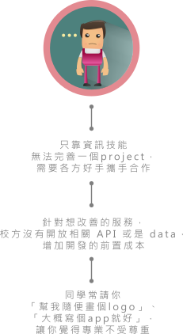

Hey you，是的，
就是現在正在看著螢幕的你，
對於校園生活有什麼想法呢？
「有時候靈光乍現，覺得能夠有某個服務的話就太好了，可惜我不會寫程式啊嗚嗚」
「想基於現存的校園資訊系統做改善，問題是要寫個爬蟲程式把data都抓下來太耗時了......」
「這個網站/app怎麼可以這麼沒有美感？而且對使用者來說，頁面和按鈕的設計都太不直覺了.....」
「沒有資源、沒有夥伴、沒有設計師，就算會寫CSS，會拿鉛筆和會畫畫是兩回事啊ＱＱ」
也許你對校園資訊服務
有很多靈感，
但在開發過程中，
是否曾經遇過以下的問題呢？

Our Mission
團隊媒合
一個專案的開發其實往往不如使用者所想的簡單，更不是幾個程式設計師就能完成的事。因此，InfoPlat將致力於團隊媒合平台的建立，使相同理念的設計師、工程師與行銷人員之間得以聚集、共事，幫助開發者找到相同理念、但具不同專長的合作夥伴。
雙向溝通
InfoPlat期望建立以使用者為中心的設計思維，透過蒐集普遍學生對於校園資訊服務的聲音，讓非開發者也能享受到更為便利的校園；同時建立行銷團隊，向不具開發經驗的學生說明專案的運作流程。透過雙向溝通，InfoPlat欲促進開發流程的透明化，讓使用者也能明白開發過程中的空間與限制。
學校資源
開放資料、開源模式是現今資訊社群發展的趨勢，雖然資訊無法解決生活中所有的困難，卻常常是解決問題最有效的手段之一。但首先，學校資源的巨大礦山得先被開放，才能開採。因此我們將持續與校方溝通，爭取資料及API的開放，甚至召集工程師，自己建立相關服務的API，並開放供學生開發者使用。
Open Campus
那麼開放學校的礦山之後，這些資源可以用來做些什麼呢？
零時政府 g0v.tw 成形於2012年，由數名臺大資工系校友發起，為一個推動政府資訊透明化的社群，致力於開發公民參與社會的資訊平台與工具。透過「開放協作」與「開源模式」，g0v已經促成許多開放資料、開放政府的成果；截至2014年初已有遍佈三大洲的貢獻者，成果皆以自由軟體模式或創用CC方式釋出。
g0v.tw 以開放原始碼的精神為基底，關心言論自由、資訊開放，希望可以最新的科技，提供讓公民更容易使用的資訊服務。資訊透明的服務和平台是 g0v 唯一的共識。
政府可以開放透明，那學校呢？
我們期許將g0v模式帶入校園，推動校園資料的開放，並讓相關資訊服務能夠以更開放的方式被存取。
InfoPlat 認為，
開放校園（Open Campus）建立在即，
刻不容緩！
The Future
The Future
透過開發者與使用者的雙向溝通、學校資源的開放、以及團隊媒合平台的建立，InfoPlat希望能促進整體開發環境的友善，真正建立開放校園。
InfoPlat明白觀念的建立、資訊的傳遞不只是學校的事，更不只是臺大的事，因此除了積極與校方以及學生自治團體溝通，甚至與同樣有心建立學生資訊平台的各大專院校聯繫串連。除此之外，也將透過現有的學生資訊、設計社群，進行開發者社群的培育、建立與推廣。
我們曉得這將是一條漫長的道路，而InfoPlat願意為此盡一份心力。
How About Now?
你是否曾經這樣想過...
水源 Tracker
如果在水源阿伯在離你50公尺時，有個app能通知你及時把腳踏車牽走，「那我就再也不用到水源牽車了！」
CEIBA 雲端大硬碟
每次老師上傳課堂投影片的修正版時，你有沒有怨嘆過，「要是 CEIBA 可以像雲端硬碟一樣自動更新就好了！」
美食清單
每次光是決定要吃哪家餐廳就要討論半小時......「欸，點開你喜歡的那個女神的美食清單啊，看她有列哪幾家店！」
如果這些服務可以被逐一的
整合進一個app呢？
讓我們一起來決定！
看看 InfoPlat 的合作對象

使用者經驗＼臺大不一樣思考社 NTU d.thinking
DT將帶領學生秘書的各專案進行Empathy、Define、Ideate、Prototype、Test的過程，對於目標使用者的需求進行探討分析；同時擔任各專案的PM，和設計師與工程師溝通協調。
校園媒體＼臺大學生電視台 NTUTBC

TBC已與InfoPlat的「社團平台」專案合作一學期有餘，拍攝並剪輯各社團的訪問影片；臺大學生報亦於上學期擔任InfoPlat「社團平台」專案的記者與編輯，協助社團訪談的工作。
廣告行銷＼臺大數位影片創作社 NTUDMCC
DMCC將與TBC一同進行社團平台訪問影片的拍攝，替各社團以及InfoPlat的各專案進行形象片的製作，作為行銷與宣傳的利器。
招募對象
無限的揮灑空間，除非你限制自己，否則這裡沒有限制
Designers
對於介面與使用者經驗有興趣者
需熟悉PS或AI至少其一
具CSS、JavaScript等前端技術者佳
在這裡找到你的同好，我們找來使用者測試你的產品，並將理念推廣至各大院校
Programmers
對於開放校園抱持高度熱忱者
具Web或App之開發能力
有曾經開發專案的經驗者佳
行銷至各大院校需要方法，來這裡發揮你的創意
Managers & Consultants
善於溝通協調不同領域的夥伴者
對數位行銷及資訊產業有所涉獵
具相關活動籌辦、組織經營經驗者佳
不限學校、系所、年級；
只要你有熱忱、具相關能力，
歡迎你來應徵！
除了上述職位，
若你對公關、人資、管理、
行政、財務有興趣，
也歡迎加入InfoPlat團隊：）